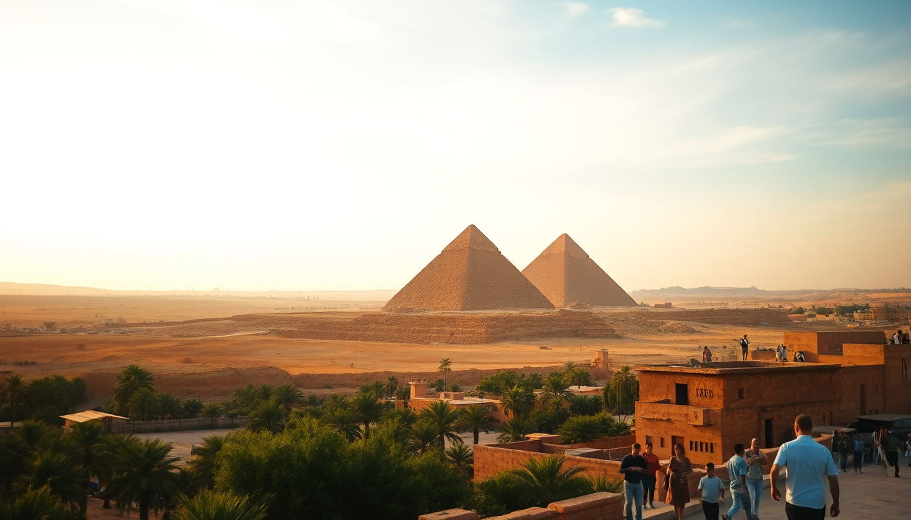

Best Day Trips from Cairo: Giza, Saqqara, and Alexandria

I’ve done the Cairo day-trip circuit more times than I care to count—dragging jet-lagged friends, solo research runs, and even a chaotic family visit. The key is not to overstuff your day. You can see the Pyramids, hit Saqqara, and even squeeze in Alexandria, but only if you plan for traffic, heat, and the inevitable “one more papyrus shop” detour. Here’s what actually works.
How do you visit the Pyramids of Giza without getting scammed?
The Pyramids are iconic, but the touts are relentless. We drove from our hotel in Zamalek around 7:30 AM to beat both the crowds and the midday sun. You want the main entrance near the Great Pyramid of Khufu—ignore the side gates that locals try to redirect you to.
Inside, skip the camel ride unless you’re fine with haggling for ten minutes and then being charged extra to dismount. The Solar Boat Museum is worth the separate ticket for the cedar boat reconstruction alone, but the view from the Panoramic Point (walk east from the Pyramid of Khafre) gives you the postcard shot without the crowd.
- Start early: Gate opens at 8 AM. Be there.
- Entry ticket: Buy at the official booth, not from guys on the street.
- Inside tip: The Great Pyramid interior is cramped and humid—skip it if claustrophobic.
- Lunch nearby: Koshary Abou Tarek in downtown Cairo is a 20-minute drive back and worth the detour for the lentil-pasta-chickpea bowl.
Is Saqqara better than Giza?
If Giza feels like a theme park, Saqqara feels like an archaeological site. The Step Pyramid of Djoser is older, quieter, and more interesting to walk around. We spent two hours here versus three at Giza, and I enjoyed Saqqara more.
The site is spread out, so you’ll want a driver or a tour that includes transport. We booked through GetYourGuide for a half-day combo that covered Giza and Saqqara—practical because the two are only 30 minutes apart by car. The Tomb of Mereruka has vivid reliefs that beat anything in the Giza plateau’s mastabas.
- Drive time from Giza: 25–30 minutes via the desert road.
- Don’t miss: The Serapeum (underground burial of Apis bulls) costs extra but is eerie and unique.
- Watch out: The “free” guide who appears at your car—politely decline unless you want to tip.
- Best photo spot: The plateau facing the Step Pyramid, late afternoon light.
What’s the fastest way to get to Alexandria from Cairo?
Alexandria as a day trip is ambitious but doable if you leave Cairo by 6 AM. We took the Trenitalia train from Ramses Station—the Spanish Express (first class, air-conditioned) gets you there in about 2 hours 40 minutes. Booking online the day before saved us the scramble at the station.
Once in Alexandria, you don’t have time for everything. Prioritize the Bibliotheca Alexandrina (modern library, stunning architecture) and the Citadel of Qaitbay (fortress on the Mediterranean). Skip the Catacombs of Kom el Shoqafa if you’re short on time—they’re interesting but take an hour underground that’s better spent on the corniche.
- Train tip: Book first-class on the 6 AM Spanish Express. Costs about $12.
- In Alexandria: Taxi from the station to the library is 10 minutes, fixed price around 50 EGP.
- Lunch spot: Mohamed Ahmed in the city center for fuul and falafel—cheap and honest.
- Return train: Catch the 4 PM back to Cairo to avoid rush hour.
Where should you stay in Cairo for easy day trips?
I’ve stayed in three main areas: Zamalek, Garden City, and Giza. For day trips, Zamalek wins. It’s central, walkable to good food, and not as chaotic as downtown. We booked Hotel Longchamps in Zamalek—small, clean, with a rooftop terrace that’s a lifesaver after a dusty day.
If you want to be closer to the Pyramids, the Marriott Mena House in Giza is literally at the gate, but you pay for the view and the breakfast buffet is overpriced. For budget, Steigenberger El Tahrir in Garden City is solid and near the Egyptian Museum (which you should also do on a half-day).
- Zamalek: Quiet, leafy, good restaurants like Sequoia on the Nile.
- Giza: Convenient for pyramids, but traffic to downtown is brutal.
- Garden City: Middle ground, close to the museum and metro.
Should you hire a private driver or join a group tour?
I’ve done both. Private driver is better for flexibility—we paid about $60 for a full day covering Giza and Saqqara, including wait time. The driver we used, Ahmed (found via a hostel recommendation), spoke good English and didn’t push us into shops.
Group tours are cheaper (around $30 per person) but you’ll waste time picking up other people and sitting through obligatory papyrus or perfume demonstrations. For Alexandria, the train-plus-walk method is cheaper than any tour, and you control the pace.
- Private driver: $50–70 for 8 hours. Negotiate upfront.
- Group tour: $25–35, includes lunch and guide, but expect stops at tourist shops.
- Best for solo travelers: Group tour for Giza/Saqqara, train for Alexandria.
FAQ
Is it safe to do day trips from Cairo alone? Yes, I’ve done them solo multiple times. The main risks are traffic (cross streets carefully) and touts at tourist sites. Keep your phone charged, use Uber for short rides (it’s cheap and reliable in Cairo), and avoid walking alone after dark in less crowded areas like the outskirts of Giza.
Can you see the Pyramids and Alexandria in one day? Technically yes, but I wouldn’t recommend it. You’d need to leave Cairo by 5 AM, rush through Giza in two hours, then drive two hours to Alexandria (or take a late train), and you’ll be exhausted. Better to split them into two separate day trips.
What’s the best time of year for these trips? October through March. Summer (June–August) is brutal—45°C at the Pyramids with no shade. We went in November and it was perfect: 25°C, clear skies, and the sites were busy but not overwhelming.
Conclusion
- Start Giza and Saqqara by 7:30 AM to beat the heat and crowds.
- Take the Spanish Express train to Alexandria for a reliable, comfortable ride.
- Stay in Zamalek for a central base with decent food and quiet streets.
- Skip group tours for Giza/Saqqara unless you’re on a tight budget.
- Always carry cash in small Egyptian pound notes for tips and entry fees.